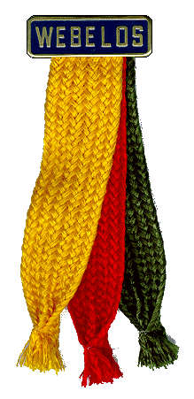 |
Let's Vote!Review the following and decide which Activity Badges you would like to work on as a Webelos. Write your name to the left of at least 4. |
||
| Name | |||
|---|---|---|---|
| Aquanaut 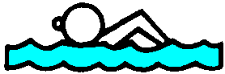 |
Aquanauts are people who are at home in and around the water. When you an aquanaut, you enjoy the water, but you also respect it. Swimming, floating, snorkeling, water rescue, and boating are all skills of aquanauts.
|
||
| Artist 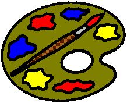 |
Paints, brushes, crayons, clay. Soft colors, bright and dark ones. Shapes you haven't tried before. When you create a work of art, you stir up a fascinating mixture of materials and ideas.
Making art is a constant experiment. You try many ways of working.
|
||
| Athlete 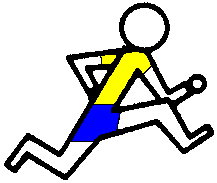 |
Strength and good health are important to you now for sports and games. They'll be important to you all your life. Athletes know that a good training program includes exercises that build strength and endurance.
|
||
| Communicator |
A communicator is a person who shares information. We all do that constantly. When you speak, write, yawn, smile, or frown, you communicate. You can communicate with pictures, sign language and codes. We communicate over long distances by mail, telephone and computer.
|
||
| Craftsman 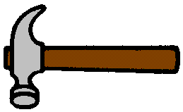 |
May people use tools every day in their work. Other people become experts at using tools so they can enjoy hobbies.
|
||
| Engineer 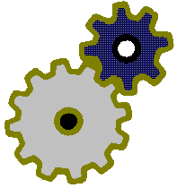 |
Engineers designed your school bus, the cars on the road, the road itself, and the bridges you cross. Engineers designed all the different kinds of computers you see at school, in offices, and at home.
Airplanes, space shuttles, space stations - all designed by engineers. Engineers work in many exciting and challenging fields.
|
||
| Family Member |
A family is a group of people who care for one another and share their lives and their love.
|
||
| Forester 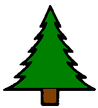 |
Trees and other forests plants are important parts of the interconnected life on Earth. A forester's work - taking care of trees and managing forest land - is important to the well-being of the planet. You'll learn why when you earn the Forrester activity badge.
Take you time and notice everything - all kinds of trees and other plants, animals, birds and insects. The forest is a fascinating place.
|
||
| Geologist 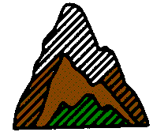 |
A geologist is a person who studies the history of the earth and its life. In this case, the history books are rocks. Geologists are interested in learning how the earth is made.
Geologists study rock formations at the tops of mountains and deep in the earth's crust. They investigate earthquakes, volcanoes, and geysers. They know about the uses of rocks and minerals. Some geologists search for mineral deposits like gold, diamonds, coal, and oil.
|
||
| Handyman 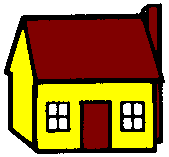 |
A handyman can do many different jobs. He knows how to take care of a car and a bike. He uses tools to make repairs around the house, and he takes care of the lawn.
When you work on this activity badge, you can learn a lot about keeping a car, bike, and home in good shape. You can find out how to change a flat tire.
|
||
| Naturalist 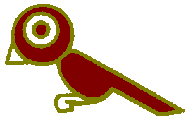 |
A naturalist studies living creatures and plants in the wild. When you visit a nature center to learn about birds, reptiles, mammals, trees and wildflowers, your guide is a naturalist.
|
||
| Scholar |
School is a big part of your life. You study math, science, language, and other subjects, but you also learn about yourself - what subjects you like best, what areas you want to explore further.
You learn how to concentrate and how to find out what you want to know. To be a good scholar, you have to be curious and determined to gain everything you possibly can from your education.
|
||
| Scientist 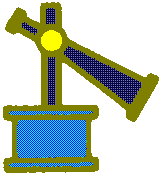 |
Scientists know about laws of nature that explain much about the world and the universe. They continue to learn by experimenting, and they make discoveries.
They take nothing for granted. They may think and idea is true, but they test it over and over to prove it.
|
||
| Showman |
Everybody loves to see a show. And it's fun to be on stage. Behind the scenes are people who enjoyed creating the script, songs, and scenery.
|
||
| Sportsman 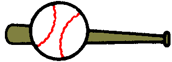 |
In the Sportsman activity badge, you'll play team sports like basketball, baseball, and soccer. You'll go out for individual sports like bicycling, swimming, and tennis.
|
||
| Traveler |
Traveling is one of humankind's greatest adventures. You'll enjoy the thrill of discovery wherever you travel. Be curious, ask questions, read signs about points of interest, notice the sights and sounds.
|
||
| The Activity Badges required for Webelos Badge and Arrow of Light are not in this list because we will work on them reguardless. Text adapted from the Webelos handbook. | |||